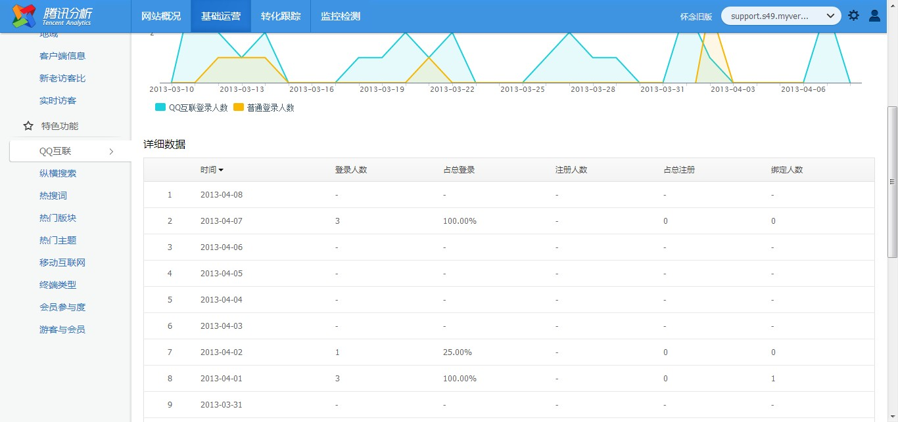

腾讯分析
腾讯分析（Tencent Analysis），简称TA，是全球第一款专用于社区的统计分析系统。“腾讯分析”优于传统的网站统计工具，除了具备实时数据分析、网站分析、来源分析、路径分析这些基础功能外，还具备一系专业社区分析功能功能，例如游客的分析、版块与主题、会员参与度分析等，此外“TA”还提供QQ互联分析、纵横搜索分析、广告效果分析等特色分析以以及网站监控、网站测速、数据订阅等一系列站长工具：
一、基础统计分析：
基础统计分析包括：实时数据分析 、网站分析、来源分析、路径分析以及页面热区图，展示了网站的访问情况、来源情况、访问路径等。帮助站长清晰地了解访客的行为、属性等，以方便站长进行有效地网站运营。
二、专业社区分析：
腾讯分析与Discuz!合作，针对社区特点专门推出了更贴近社区特色的统计分析功能，如会员与游客的分析、版块与主题、会员参与度分析等。
会员与游客：帮助站长区分游客与会员的比重，让站长清楚了解：浏览量（PV）、独立访客（UV）等各项指标趋势和规律
版块与主题：帮助站长区分会员与游客分别关注哪些版块和主题，了解每个版块与主题的浏览量、访问量和跳出率等，从而衡量版块质量与话题方向
会员参与度：精确衡量会员在论坛中的活跃程度，区分不同发帖量级的会员参与情况，帮助站长更清晰地掌握网站活动效果
三、特色分析功能：
除基础分析外，腾讯分析还有QQ互联分析、纵横搜索分析、广告效果分析等特色的分析，帮助站长更深入地了解网站的运营状况，为网站的决策提供更加有力的数据支持。
QQ互联分析：通过区分统计QQ互联与普通用户的登陆、注册、绑定人数，帮助站长了解QQ互联每日的使用情况
纵横搜索分析：清晰展示用户每日站内纵横搜索量与历史趋势，综合衡量纵横搜索使用情况
广告效果分析：展示所有站内广告的曝光量、访问次数、点击量与点击率等信息，帮助站长清晰把握站内广告脉搏
四、转化跟踪功能：
全部来源：直接访问和外部链接访问趋势图和详细数据
搜索引擎：各搜索引擎的数据分析和趋势图
外部链接：外部链接的数据分析和趋势图
关键词：关键词排行
五、实用站长工具
腾讯分析提供了网站监控、网站测速、数据订阅等一系列站长工具，帮助站长更及时、更全面地掌握网站状态。
网站监控：为站长提供免费、及时、实用的网站监测工具，以帮助站长了解网站不可用状态及网站异常情况，并提出可供站长参考执行的具体优化建议
网站测速：通过统计网站加载的平均时间，以地图形式展示网站的访问速度，使网站打开速度一览无余，方便站长对症下药、合理优化
数据订阅：为您量身定制的网站数据订阅功能，精选每日网站关键指标与最新数据“送货上门”，彻底解决您“忘看数据”的困扰，让TA与您靠得更近